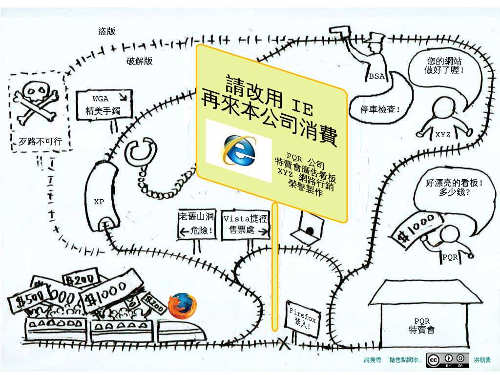
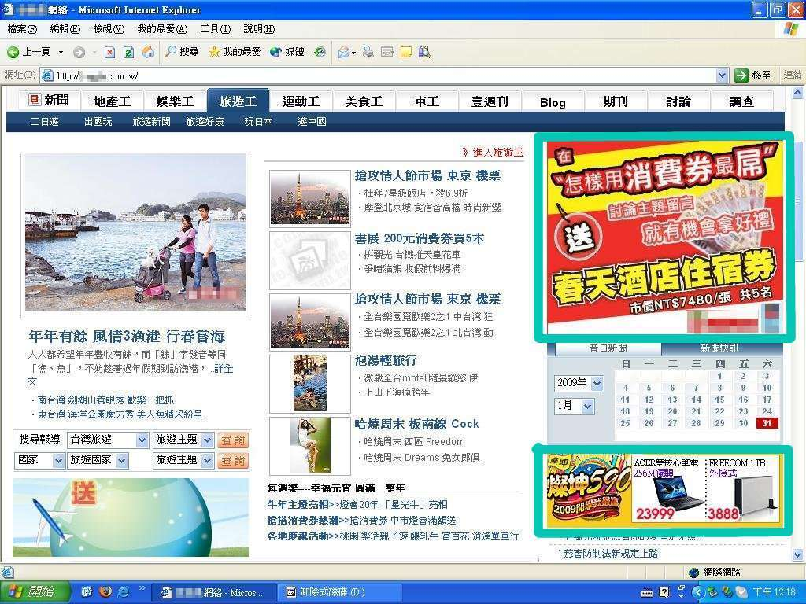
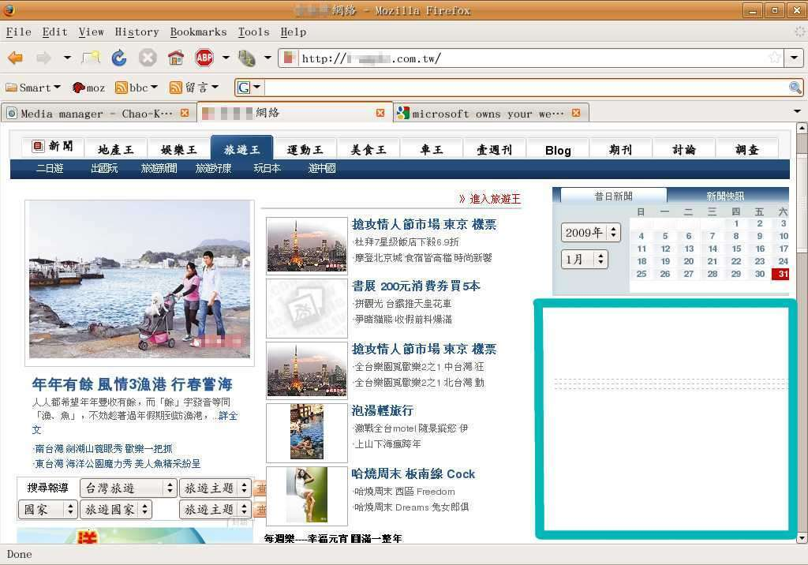
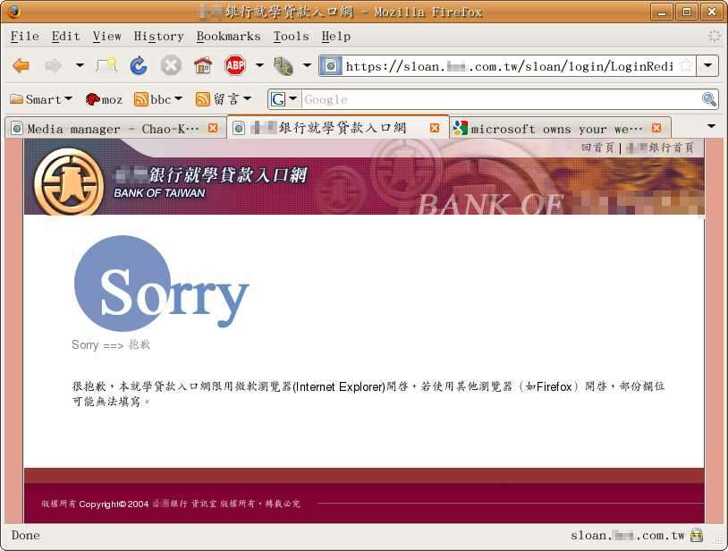
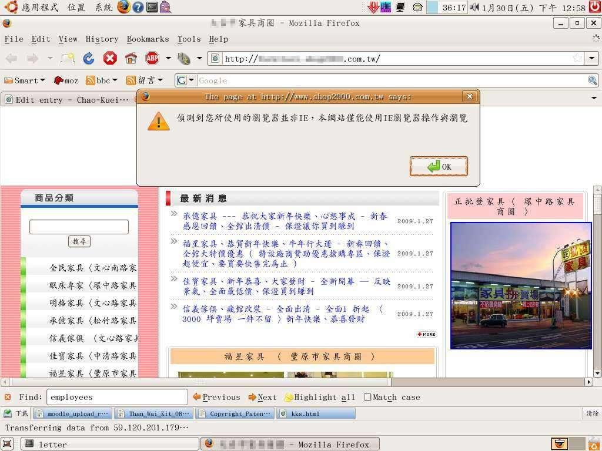

何苦砸錢拋售到手的點閱率？


(圖一)
事實上，任何人，任何產業，只要您正在花錢或花力氣宣傳行銷自己，您都不可錯過行銷貴的這篇文章。您付薪水給自家電腦工程師，或付錢給網頁製作公司，但收錢的人是否正在把已經送到您手上的點閱率硬是帶走，轉送給微軟呢？
* * * * *
您投資人力，採購軟體，請資訊部門做網頁，或者您自己花很多力氣做網頁，或者您付錢請網頁行銷公司做網頁，或者您花錢在知名媒體的首頁刊登廣告。總之，您投入一些資源，希望換取一些點閱率/曝光率。您希望越多人看到您的電話/傳真/型錄/業務/網站越好。
什麼人？任何人。
您不會因為自己是男性，就拒絕女性朋友來看您的網站。
您不會因為自己是天蠍座，就拒絕金牛座的朋友來看您的網站。
您不會因為自己是的血型是 O 型，就拒絕 AB 型的朋友來看您的網站。
您不會因為自己信仰佛教，就拒絕基督教的朋友來看您的網站。
別說是這些無關痛癢的標籤了；就算您有堅強的意識形態，就算您是國民黨(民進黨)的死忠支持者，一提到民進黨(國民黨)就有氣，您也不會因此而拒絕民進黨(國民黨)的支持者來看您的網站。請不要談論為什麼國民黨(民進黨)比民進黨(國民黨)好，那離題了，那不是重點。不論誰好誰不好，您的目的就是花錢提高點閱率。
那麼，為什麼要花很多力氣／金錢， [自己或放任收您錢的人] 拒絕微軟 IE 瀏覽器以外的任何用戶參訪您的網站？
2007年底，我曾寫過一篇︰「我願意為你…失去人氣也不可惜！」，提醒某大媒體公司不要犧牲自己珍貴的版面資源，替微軟打廣告。現在是 2009 年，情況並沒有變好。再造訪同一網站，用微軟的 IE 看到的是圖二; 用 Firefox 瀏覽器看到的是圖三。廣告買主虧到了: 2007 年，他們付錢，點閱率卻被轉到微軟去；2009 年，他們付錢，卻仍然沒有得到該得的點閱率。某大媒體公司虧到了︰2007 年，客戶付他們錢，卻把這個珍貴的版面拿來替微軟廣告；2009 年，客戶付他們錢，在本來應該刊出廣告的地方，他們卻把珍貴的版面空著沒有利用。看到這篇文章而知情的人，以後就會改找其他媒體公司刊廣告。製作網頁的網路行銷公司，虧到了，收人錢財卻不忠於事。看到這篇文章而知情的公司行號，以後就會改找其他網路行銷公司製作網頁。

(圖二：用 ie 看某大媒體網站)

(圖三：用 firefox 看某大媒體網站)
某公營銀行的就學貸款網頁被微軟綁架(圖四)。某縣市家具行的聯合網頁也被綁架(圖五)。還有很多很多。[歡迎使用非 IE 瀏覽器的讀者留言提供更多這樣的網站，並在留言中加一個關鍵詞 "錯誤示範"。但是留言時請不要太兇狠，因為這些人多數也都是被害者。這篇文章的目的是要讓這些公司覺醒，而不是要與他們為敵。要讓他們想清楚，替他們製造問題的，到底是我們這些小眾，還是微軟。至於少數機關組織裡面的少數人，刻意在製造這樣的問題，例如 TQC 的某幾張證照，這些積極的加害者，我另文再來處理。]

(圖四：某公營銀行的網站被綁架)

(圖五：某縣市家具行聯合網頁被綁架)
擅自沒收您的點閱率，將它轉送給微軟，這樣的網頁公司，不該收您的錢，而應該去收微軟的錢。如果製作網頁的，是您自己的資訊人員，那麼這樣的資訊人員，不該領您的薪水，而應該去領微軟的薪水－而且應該領微軟行銷部門的薪水，而不是技術部門的薪水。這樣的資訊部門，正在傷害您公司 (尤其是行銷部門) 的業務。更深一層地看，這些電腦公司這些資訊人之所以淪落到今天這個地步，其實也不能怪他們。是教他們網頁設計的教授，是訓練他們網頁設計的電腦補習班講師，是發網頁設計證照給他們的單位，一路誤導他們，以致於他們把自己的生涯雞蛋全部放到同一個籃子裡，只學片面的技術。很不幸，這個籃子正在下沈。他們現在手足無措，他們也是受害者－是臺灣病態網頁設計生態系的受害者。不過這些細節並不重要；我另外再寫一篇，針對這些小眾來談他們的前途與未來。對企業主您而言，最重要的，就是停止砸自己的錢替微軟廣告。請要求替您製作網頁的人，至少要用 IE、Firefox、safari 三種瀏覽器測試過。
「有誰在用其他瀏覽器嗎？」 請看一下︰中文報導、英文報導、統計圖或是原始數據。 微軟 IE 市佔率連續下降，Firefox 瀏覽器市佔連續上升，在外國尤其明顯。這也是為什麼，觀光旅遊業、外貿業還有任何與外國客戶有來往的企業/機關/組織/學校，特別應該注意這個趨勢。國內也有相同的趨勢，只是手邊沒有具體的數據。這樣的趨勢，可能跟 IE 更新推出的第零日就出現安全破洞有關；也可能跟 Firefox 的諸多套件或是方便的隨身攜帶特性有關。無論如何，把造訪您網頁的 Firefox 或其他瀏覽器用戶擋在門外，對自己的傷害會日益明顯。
有些資訊人會告訴您︰要做出能讓許多瀏覽器造訪的網頁，很困難，要加價。別理他，那是他的技術能力不足，導致工具選取判斷錯誤。現在是買方市場的時代，有能力的網頁公司與個人多得是，您不必接受他的推託之辭。請把您的錢給另一個人，給另一家公司賺。許多部落客的人氣高到可以賣廣告，他們比那些製作華而不實動畫，傷害業主利益的「資訊人」更有能力替您規畫您的網站。他們才是網路時代的行銷高手， 他們才懂得如何吸引點閱率。重點不是 flash 動畫，而是提供有用的內容。重點是 [不要走火入魔的] Search Engine Optimization。順便呼籲網路行銷/網頁製作公司，如果貴公司的作品強調不歧視其他瀏覽器 (您的網頁請一定要提到 Firefox 哦 :-] )，歡迎您留言給我，我樂意為您打廣告。這樣的留言請簡短，關鍵詞要包含 「廣告」。若貴公司的作品進一步還能符合政府無障礙網頁規範，更請記得提及此點。請指向貴公司/工作室/網頁設計課程的網頁，讓潛在客戶自己用不同的瀏覽器測試您的網站。
各個產業的企業主們，請安裝 Firefox (或 chrome、或 opera、或 safari、或 konqueror、 或…)，請測試一下︰貴公司的網頁是否被微軟綁架？請再用 Firefox 造訪微軟自己的網站。驚訝吧？微軟自己的網站都可以做到來者不拒，都可以歡迎任何瀏覽器，微軟自己都不願意為了強迫訪客安裝 IE 而犧牲已到手的人氣；為什麼您的網站反而要為微軟無怨無悔地付出？Firefox 或其他瀏覽器好不好用不是重點；看守您花錢換來的點閱率，不要被微軟 A 走，這才是重點。在這個 Firefox (及其他所有瀏覽器聯合起來) 對抗微軟的瀏覽器戰爭之中，您不需要成為無辜的炮灰。您的任務不是砸自己的錢，去替任何一個瀏覽器打壓其他任何瀏覽器。您的任務是歡迎任何瀏覽器的用戶到貴公司消費。如果您是圖裡的 PQR 公司, 請要求 XYZ 公司把直通貴公司的鐵路修好，把荒謬的看板拆掉。請要求 XYZ 公司不要收了您的錢，卻把客戶帶去微軟那裡花錢。(然後被拐走的客戶極可能就忘了回來您的網站！)如果做不到，就把 XYZ 公司換掉。已到手的點閱率，是您的資產，不該是送給微軟的貢品。
※ 本文已徵得洪朝貴老師同意轉載，原文請見其部落格